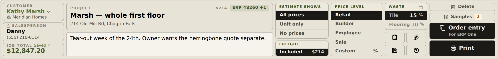
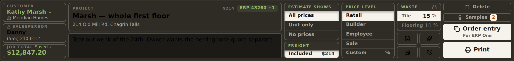
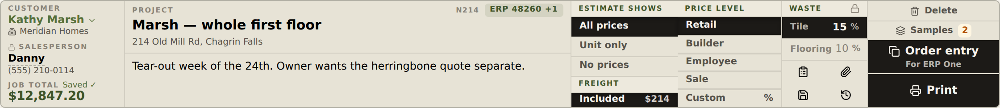
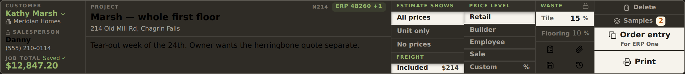
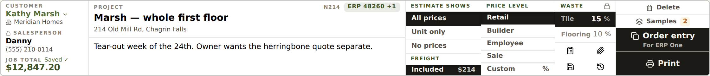
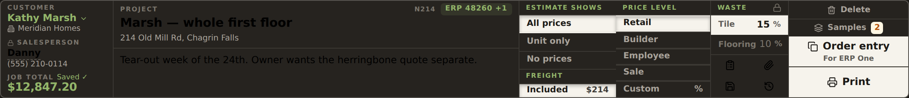
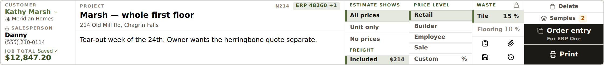
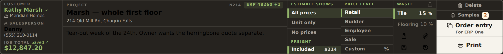

Spike, 2026-09-22. The one-bar header with the 5px gutters closed: one outer frame, inner boxes lose their own borders and rounding, and faint hairlines (the rail's --ft-border) divide the cells — the way the logo block in the left rail is ruled. Every shot is the REAL ProjectHeaderBar in header-preview.html with one of the CSS files here injected (render.mjs); nothing in src/ changed. Throwaway — the CSS is an override sheet, not the implementation.
Each box carries its own border-strong line and 6px radius, on the band tint, with 5px gaps. Twelve separate outlines inside one outline.


Only the lines change: gutters to 0, inner borders and radii off, hairlines between every cell, one outer frame. Band tint, sand section strips and the ink pressed rows all stay. The smallest possible step.


A, and the header sits on the card surface like the rail does, with the sand strips behind ESTIMATE SHOWS / PRICE LEVEL / WASTE dropped, so the hairlines are the only structure. Pressed rows keep the ink fill.


B, and the pressed option rows swap the black slab for the moss segment tint the tab strips already use (--ft-seg-on-bg) with a 3px moss edge, so only Order entry / Print stay solid. Tier colours still paint the tier row and the two primaries — the one thing that must keep shouting.


1. The Estimate-shows/Freight stack and the Price-level column have different row counts, so their hairlines don't line up across the two columns — visible now that the lines are continuous. The implementation would give .ft-hopt a fixed row height so rows align, or move Freight beside Waste.
2. The two ink primaries touch; the divider between them is the band colour here. A 1px paper line, or a 2px gap, is a taste call.
3. Focus rings on the name/address/notes fields become inset rings (a rounded ring in a square cell looks wrong).